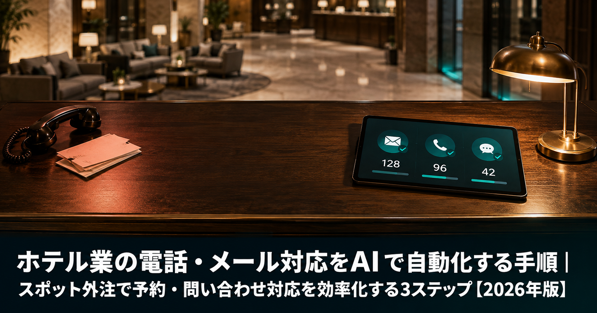

ホテル業の電話・メール対応をAIで自動化する手順｜スポット外注で予約・問い合わせ対応を効率化する3ステップ【2026年版】

ホテル・旅館の電話・メール問い合わせ対応をAIで自動化することで、夜間・早朝を含む定型問い合わせの7〜8割をスタッフなしで処理できます。問い合わせシナリオの洗い出し→AI自動応対システムのスポット外注設定→テスト稼働・改善サイクル確立という3ステップで、情シス不在のホテルでも4〜8週間で導入が完了します。
本記事は2026年8月時点の情報に基づいています。AIツールのサービス内容・料金は随時変更される場合があります。
「何から手をつければよいかわからない」という段階でも大丈夫です。
ANKENがホテルのAI導入に詳しいエンジニアをスポットでご紹介します。
初回相談無料・しつこい営業は一切ありません・1時間以内にご返信
無料で相談する →ホテルの問い合わせ対応が人手不足を深刻化させる理由

2026年現在、ホテル・旅館業界はインバウンド回復による予約件数の増加と、慢性的なスタッフ不足という二重の課題に直面しています。フロントスタッフが電話・メール・対面応対を同時にこなす状況が日常化し、離職率の高止まりにもつながっています。
特に見逃されがちな問題が、問い合わせ内容の7〜8割が定型的な質問である点です。「チェックインは何時ですか」「キャンセルポリシーを教えてください」「最寄り駅からどう来ればいいですか」といった内容は、マニュアルに答えが書いてあるにもかかわらず、スタッフが毎回個別に対応しているために、本来集中すべき業務（クオリティアップ・オペレーション改善）の時間が削られています。
- チェックイン・チェックアウト時間の確認
- 予約内容の確認・日程変更・キャンセルポリシーの問い合わせ
- 駐車場の有無・台数・料金
- 最寄り駅からのアクセス・送迎の有無
- 朝食・夕食プランの詳細、アレルギー対応の可否
- 周辺観光スポット・おすすめレストランの案内
- Wi-Fi・コンビニ・ATMなどアメニティ情報
AIチャットボット・音声自動応答（IVR）・メールAIを組み合わせることで、これらを24時間365日自動処理できるようになります。スタッフは「AIが対応できない複雑なケース」にのみ集中すればよくなり、応対品質の向上と残業削減が同時に実現できます。
STEP 1：電話・メール問い合わせのシナリオを洗い出す
AI自動応対の成否は、システム選定より「事前のシナリオ整理」で8割が決まります。ここを丁寧に行うことで、スポット外注エンジニアへの発注仕様書が自然に完成します。
過去の問い合わせログを3分類する
まず過去3〜6ヶ月分の電話メモ・メール履歴・フォーム問い合わせを集め、内容を3つに分類します。完璧な分類は不要で、「7割できていれば十分」という感覚で進めましょう。
- AI完全自動対応（全体の6〜7割）：答えが1つに決まる定型質問。FAQとして登録しAIが直接回答する。例：チェックイン時間・駐車場有無・アクセス。
- 条件分岐付きAI対応（全体の1〜2割）：「○○の場合は△△」という条件を含む質問。シナリオを複数パターン用意することで自動化可能。例：「閑散期と繁忙期でキャンセルポリシーが違う」「部屋タイプによってチェックイン時間が異なる」。
- スタッフ対応必須（全体の1〜2割）：クレーム、特別リクエスト、予約システムと連動した複雑な変更など。AIが「担当者に引き継ぎます」と返して転送する設定にする。
「Top20問い合わせ一覧」として整理する
分類が終わったら、「Top20の問い合わせ」「想定回答文（箇条書きでOK）」「転送すべき条件」をA4の1〜2枚にまとめます。この資料がそのままスポット外注エンジニアへの発注仕様書になります。
完璧なドキュメントを作る必要はありません。箇条書きで「チェックインは15時から」「駐車場は20台・無料」といった情報を羅列するだけで、経験あるエンジニアはシナリオ設定を進められます。不足部分はエンジニアとのヒアリングで詰めることができます。
STEP 2：AI自動応対システムを導入・設定する（スポット外注活用）

シナリオ仕様書が揃ったら、ツールの選定と設定です。ここが最も技術的な工数がかかる部分のため、スポット外注エンジニアを活用することで、情シス不在・ITリテラシーが高くないホテルでも安全に導入できます。
ツール選定の3パターン
-
Webチャットボット型（ホームページ・LINE公式アカウント）
ホームページやLINEに設置し、テキスト入力で回答するタイプ。問い合わせフォームの代替として最も導入しやすい。スポット外注設定費の目安：10〜25万円。月額SaaS料金：1〜3万円。 -
AI音声自動応答（IVR）型
電話に自動で応対するシステム。AIが音声認識で質問を理解し、定型回答を音声で返す。電話問い合わせが多いホテルに有効。スポット外注設定費の目安：20〜40万円。月額SaaS料金：2〜5万円。 -
メール自動返信AI型
届いたメールをAIが自動分類し、定型文で即時返信。複雑な内容はドラフトを生成してスタッフが確認するハイブリッド型も可能。スポット外注設定費の目安：8〜15万円。月額SaaS料金：0.5〜2万円。
スポット外注エンジニアへの依頼内容
ANKENでは、ホテル向けAI導入をスポット（単発・タスク単位）で依頼できるエンジニアをマッチングしています。エンジニアへの発注時に渡す情報は以下の4点で十分です。
- 導入したいシステムの種類（Webチャットボット / 音声IVR / メールAI）
- STEP 1で作成した「Top20問い合わせ一覧と想定回答文」
- 既存の予約システム名（じゃらんnet・楽天トラベル・独自PMSなど）と連携要否
- 稼働開始希望日・テスト期間の目安
エンジニアはこの仕様書をもとにSaaSの選定・シナリオ設定・既存システムとの連携設定を行います。週末2〜3日のスポット稼働を2〜3回（計5〜8日）繰り返すことで初期設定が完了するケースが多く、ホテル側の立ち会いは最初のヒアリング1〜2時間だけで済むことがほとんどです。
多言語対応が必要な場合の追加検討事項
インバウンド需要が高いホテルでは、英語・中国語（簡体字）・韓国語などの多言語対応も必要になることがあります。多くのAIチャットボットSaaSは多言語対応機能を標準搭載していますが、日本語で作成したシナリオを機械翻訳してそのまま使うと不自然な回答になることがあります。スポット外注エンジニアに多言語シナリオの品質確認（ネイティブチェック依頼含む）を組み込むかどうかも、発注前に確認しておきましょう。
STEP 3：運用テスト・本番稼働・改善サイクルを確立する
システム設定が完了したら、すぐに本番運用するのではなく、2〜3週間のテスト稼働期間を設けることが重要です。このフェーズを省略すると、お客様への誤回答や不快な体験につながるリスクがあります。
テスト稼働期間の進め方
- 実際に問い合わせを10〜20件テスト送信し、AIが意図した通りの回答を返しているか確認する
- 「スタッフに引き継ぐべきケース」が正しく転送されているか確認する
- 回答の文体・言葉遣いがホテルのブランドトーンに合っているか確認する（カジュアルすぎないか、丁寧すぎてわかりにくくないか）
- 多言語対応がある場合、翻訳精度が許容範囲内かネイティブに確認する
テストで見つかった誤回答・シナリオの穴・文体の違和感は、スポット外注エンジニアに改修を依頼します。「テスト→修正→再テスト」のサイクルは通常1〜2回で収束します。テスト期間終了後に本番稼働へ移行します。
本番稼働後の改善サイクル
本番稼働後は「AIが自動解決できなかった問い合わせ」のログを毎月確認します。初年度は自動解決率60〜65%程度でも、半期に1回スポット外注でシナリオを追加・改修することで、2年目以降は75〜85%の自動解決率に到達するホテルが多いです。この「毎月のモニタリング＋半期ごとのスポット改修」というサイクルを確立することが、長期的な効果を引き出す鍵です。
また、季節やイベントに合わせてシナリオを事前に追加する「先回り更新」も有効です。年末年始・GW・地域イベント時は特定の問い合わせが急増するため、繁忙期の1〜2ヶ月前にスポット外注でシナリオを追加しておくと、繁忙期のスタッフ負担をさらに抑えられます。
費用相場と期間の目安
スポット外注でAI自動応対を導入する場合の費用・期間の目安を整理します。ホテルの規模・既存予約システムの種類・多言語対応の要否によって変動しますが、以下が参考値です。
- Webチャットボット（FAQ対応のみ）：スポット外注設定費10〜25万円、月額SaaS1〜3万円、導入期間4〜6週間
- AI音声IVR（電話自動応答）：スポット外注設定費20〜40万円、月額SaaS2〜5万円、導入期間6〜10週間
- メール自動返信AI：スポット外注設定費8〜15万円、月額SaaS0.5〜2万円、導入期間3〜5週間
- 3種類の組み合わせ導入：スポット外注設定費30〜70万円、導入期間8〜12週間（順次導入でリスクを分散することを推奨）
- 半期ごとのシナリオ追加・改修：スポット外注費2〜8万円（改修規模による）
既存の予約システム（PMS）との連携が必要な場合は、設定費が上記より10〜20万円程度増加します。一方で、まずFAQ対応のみに絞って小さく始め、効果を確認しながら音声IVRやメールAIを追加するという段階的アプローチが失敗リスクを最小化します。
よくある質問
- Q. ホテルのAI自動応対の初期費用の目安はどのくらいですか？
- A. スポット外注の設定費用が8〜40万円（ツール種別による）、月額SaaS料金が1〜5万円が目安です。小規模チャットボットから始めれば総額15万円以内で導入できるケースもあります。
- Q. 予約システム（PMS）との連携は必ず必要ですか？
- A. FAQ対応のみであれば連携なしで導入可能です。予約確認・変更対応まで自動化したい場合はPMS連携が必要ですが、まずFAQ対応だけで始めて段階的に拡張する方法を推奨します。
- Q. 情シスのいないホテルでも自社で運用できますか？
- A. スポット外注エンジニアが初期設定から運用方法のレクチャーまで対応するため、情シス不在でも問題ありません。運用開始後の月次モニタリングはスタッフが行えるよう引き継ぎ資料も作成してもらえます。
まとめ
ホテル業の電話・メール問い合わせ対応をAIで自動化する3ステップを解説しました。
- STEP 1：シナリオを洗い出す 過去の問い合わせログからTop20を抽出し、「AI完全自動対応」「条件分岐対応」「スタッフ必須」の3種類に分類する
- STEP 2：AI自動応対システムを設定する Webチャットボット・音声IVR・メールAIから自施設に合うツールを選び、スポット外注エンジニアにシナリオ登録・システム連携を依頼する
- STEP 3：運用テスト・改善サイクルを確立する 2〜3週間のテスト後に本番稼働し、月次モニタリング・半期ごとのスポット改修で自動解決率を継続改善する
「どのツールを選べばいいかわからない」「既存の予約システムとの連携が不安」など、自社だけで進めるのが難しい場合はANKENにご相談ください。ホテル・宿泊施設のAI導入経験があるエンジニアをスポットでご紹介します。
ホテルのAI自動応対を単発で依頼したい方へ。
ANKENが要件整理から設定・テストまでを一貫して対応できるエンジニアをご紹介します。
初回相談無料・しつこい営業は一切ありません・1時間以内にご返信
無料で相談する →